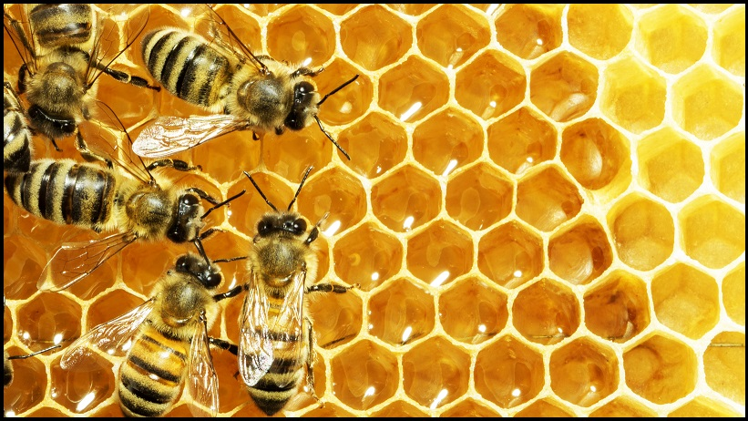

Onze missie
Honingbijen - zowel wild als gedomesticeerd - zorgen voor ongeveer 80 procent van alle bestuiving wereldwijd. Een enkele bijenkolonie kan elke dag 300 miljoen bloemen bestuiven. Granen worden voornamelijk bestoven door de wind, maar fruit, noten en groenten worden bestoven door bijen. Zeventig van de 100 beste menselijke voedselgewassen - die ongeveer 90 procent van de wereldvoeding leveren - worden bestoven door bijen. Het is onze missie om deze belangrijke dieren te redden van hun ondergang.
Bron: greenpeace.org

Bron: https://bijenclub.com/imker-kennisbank/begrippen/imker/